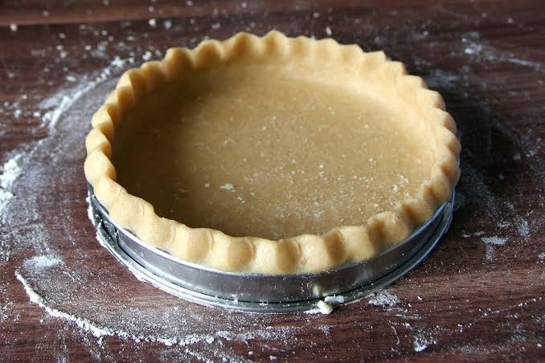

Pâte brisée
Ingredients
×
- 200 g de farine
- 3 c. à s. de sucre
- 100 g de beurre
- 1 pincée de sel
- eau

Préparation
Étape 1
Sabler 200 g de farine avec 3 c. à s. de sucre, 100 g de beurre en morceaux et 1 pincée de sel.
Étape 2
Ajouter un peu d’eau et pétrir juste assez pour former une boule.
Conseils
La source ne donne que les ingrédients (fiche « TM ») ; les étapes sont la méthode classique.